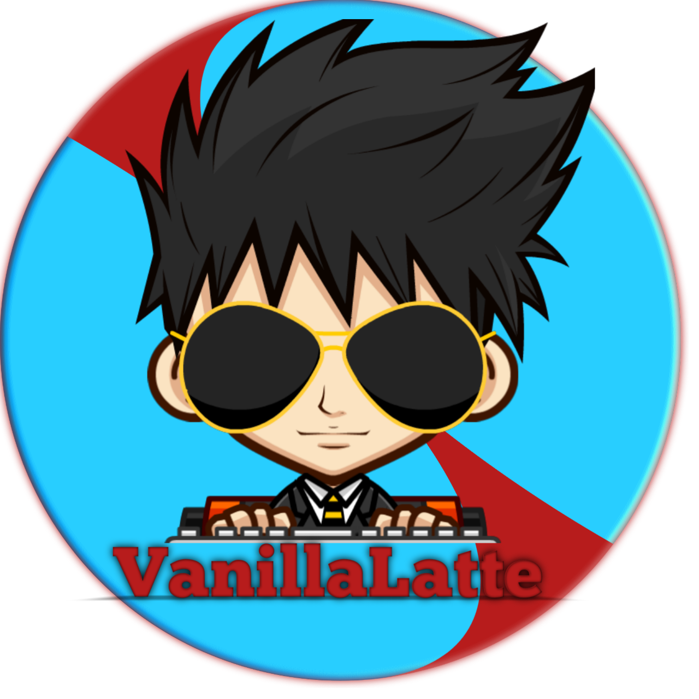

The Steam community overlay is an in-game interface that allows access to many Steam Community features while playing games. The default keybind of Shift+Tab will open the overlay in any game where it is supported and enabled.